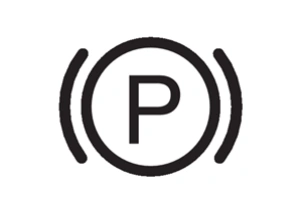
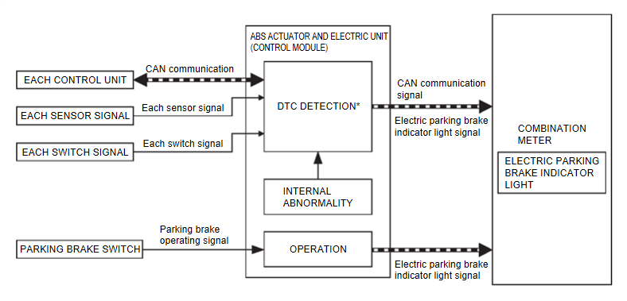
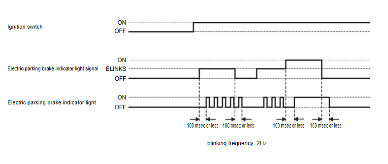

駕駛資訊與多媒體 - 儀表、警告燈與指示燈 - 全 TFT 儀表 - 系統說明 - 系統 - 警告燈/指示燈
電動駐車煞車指示燈
N5160103N0001000ENG
設計／目的
電動駐車煞車指示燈用來警告駕駛人駐車煞車已作用。

CF100C5JAA00ENG
電動駐車煞車指示燈用來警告駕駛人電動駐車煞車系統發生故障。
燈泡檢查
適用
與主警示燈同步
適用
儀表 CAN 通訊中斷或異常訊號時之作動
有關在儀表中啟動 CAN 通訊中斷的操作。請參閱
失效保護
.
系統圖

DF100C5KAB00ENG
*：電動駐車煞車指示燈點亮的故障碼。請參閱
故障碼索引
.
訊號路徑
駐車煞車作動時
ABS 作動器與電氣單元（控制單元）在駐車煞車開關被拉動時，接收來自駐車煞車開關的作動訊號。
ABS 作動器與電氣單元（控制單元）依據所接收的電動駐車煞車指示燈訊號，透過 CAN 通訊將電動駐車煞車指示燈訊號傳送至儀表。
儀表在收到電動駐車煞車指示燈訊號時，點亮電動駐車煞車指示燈。
電動駐車煞車系統異常時（閃爍）
ABS 作動器與電氣單元（控制單元）在偵測到電動駐車煞車系統故障（符合下列條件）時，透過 CAN 通訊將電動駐車煞車指示燈訊號傳送至儀表。
無法判斷已作用與已釋放之間的狀態時。
在駐車煞車開關故障的狀態下操作駐車煞車開關時。
在駐車煞車作動器故障的狀態下操作駐車煞車開關時。
駐車煞車作動器的初始位置調整未完成時。
儀表在收到電動駐車煞車指示燈訊號時，閃爍電動駐車煞車指示燈。
指示燈與故障碼的對應關係。請參閱
故障碼索引
.
燈光狀態
符合下列任一條件時。
電動駐車煞車已作用。
行駛中拉動駐車煞車開關，導致駐車煞車作用時。
制動力道測量期間。
警告燈與故障碼的對應關係。請參閱
故障碼索引
.
閃爍條件
符合下列任一條件時。
儀表未透過 CAN 通訊收到來自 ABS 作動器與電氣單元（控制單元）的訊號。
電動駐車煞車系統未啟動時。（無法判斷故障）
在駐車煞車開關故障的狀態下操作駐車煞車開關時。
在駐車煞車作動器故障的狀態下操作駐車煞車開關時。
即使將點火開關轉至 關閉，駐車煞車仍未自動作用時。
警告燈與故障碼的對應關係。
故障碼索引
熄滅條件
符合下列任一條件時。
清除故障碼
其他控制單元正常。
駐車煞車為釋放狀態。
車輛處於休眠狀態。
時序圖

CF100C5LAA00ENG
已加入書籤
書籤數量過多。
請刪除後重新加入書籤。
×
){kind=link}
){kind=link}
){kind=link}